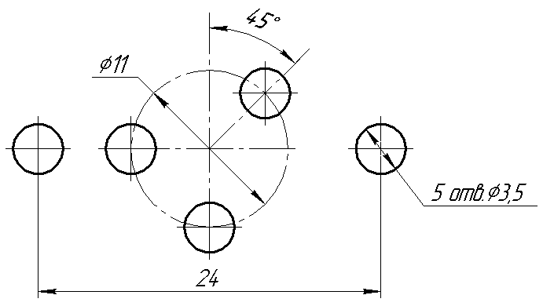

Транзисторы П213, П213А, П213Б
Транзисторы П213Б германиевые сплавные структуры p-n-p универсальные.
Предназначены для применения в переключающих устройствах, выходных каскадах усилителей низкой частоты, преобразователях постоянного напряжения.
Выпускаются в металлостеклянном корпусе с жесткими выводами. Тип прибора указан на корпусе.
Масса транзистора не более 12,5 г, крепежного фланца не более 4,5 г.

Рис. 2 - Размеры отверстий для крепления транзистора П213 на радиаторе
Таблица 1
| Тип | Iк max, А | UкэR max (UКЭ0 max), В |
Uкб0 max, В | Uэб0 max, В | Рк max (Рк т max), Вт |
|---|---|---|---|---|---|
| П213 | 5 | 40 | 45 | 15 | (11,5) |
| П213А | 5 | 30 | 45 | 10 | (10) |
| П213Б | 5 | 30 | 45 | 10 | (10) |
Таблица 2
| Тип | h21э | Uкэ нас, В | Iкбо, мкА | Iэбо, мкА | fгp, кГц | Tп max, °С | Тmax,°С |
|---|---|---|---|---|---|---|---|
| П213 | 20...50 | 0,5 | 0,15 | 0,3 | 150 | 85 | -60…+70 |
| П213А | >20 | - | 1 | 0,4 | 150 | 85 | -60…+70 |
| П213Б | >40 | 2,5 | 1 | 0,4 | 150 | 85 | -60…+70 |
Сопротивление насыщения между коллектором и эмиттером Rкэ нас не более 1,25 Ом